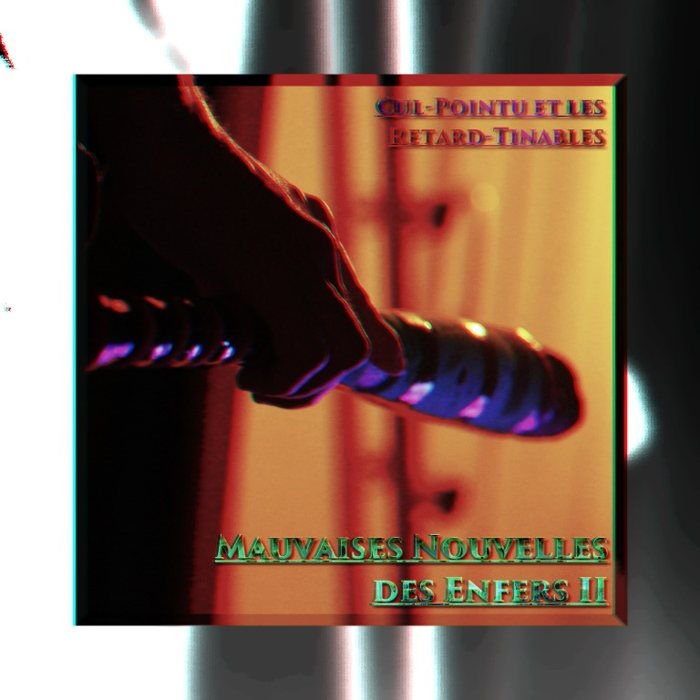
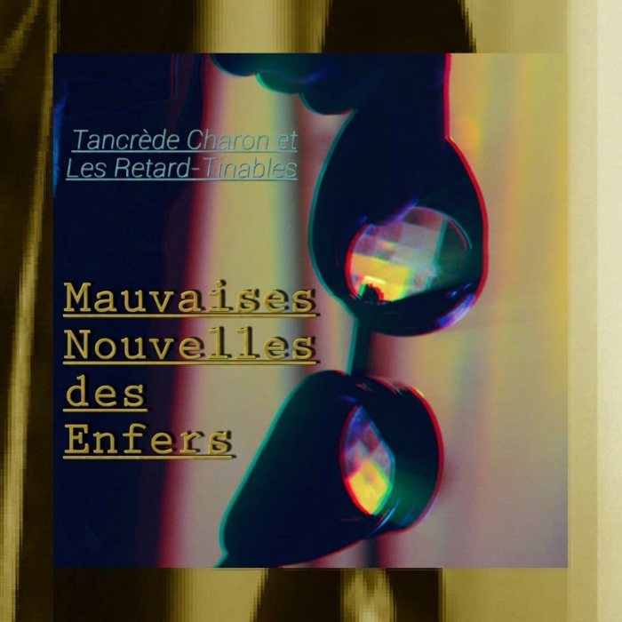
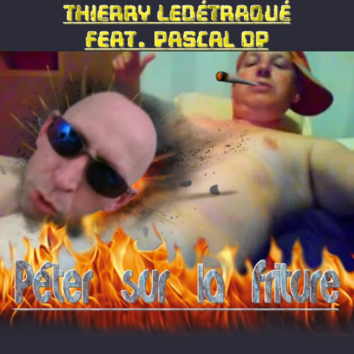
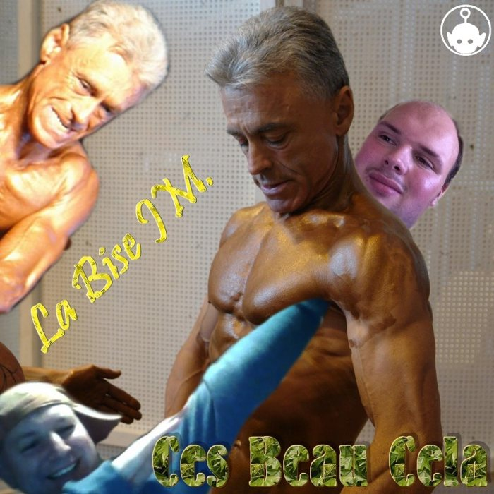
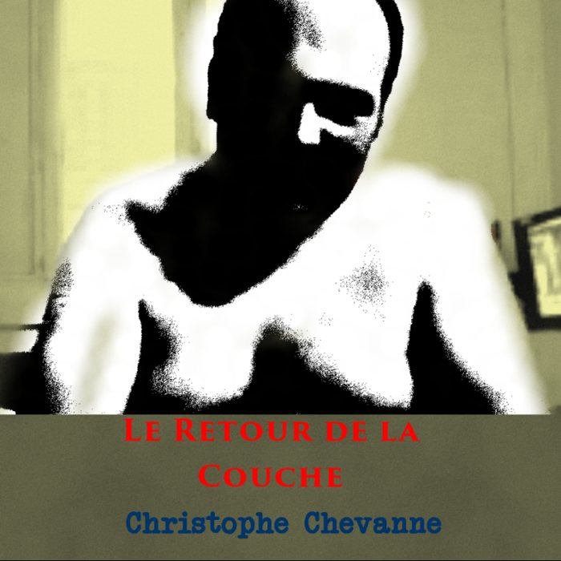
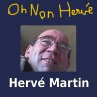
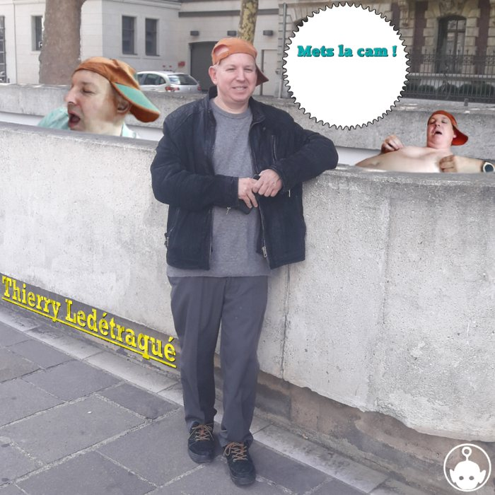
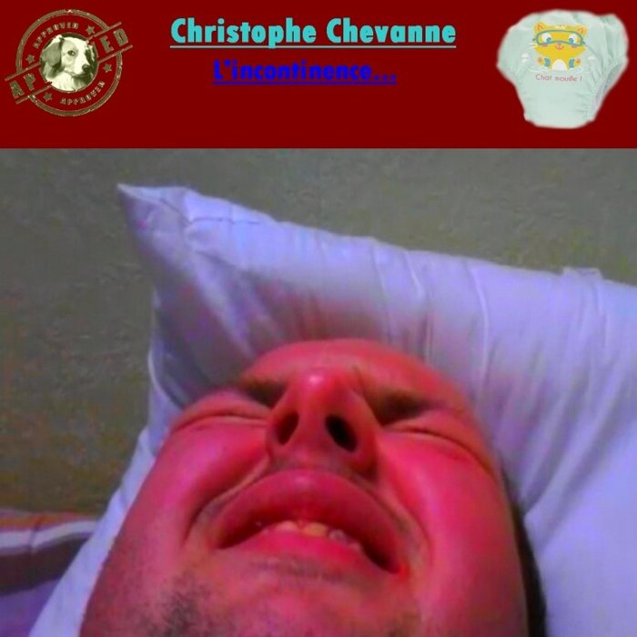

TERRITOIRE
Carte interactive de Rouen et lieux de l'œuvre.

BROUILLON · MODE FÉCAL · NON PUBLIÉ
La Créature du Marais
L'envers du site : le vitrail pourrit en violet, les contours suintent en vert, et les cinq rubriques propres cèdent la place à celles de la fosse. Discographie, albums et paroles restent identiques ; seuls les textes de présentation deviennent des confessions, anecdotes et révélations.
Carte interactive de Rouen et lieux de l'œuvre.
Personnages, figures et incarnations.
Mêmes albums, mêmes titres, mêmes paroles : seuls les textes de présentation changent.
Cabinet de curiosités : objets, costumes et accessoires.
Journal vivant des sorties et des événements artistiques.
 JubiléAnecdotes à écrire
JubiléAnecdotes à écrire
 In Odium FideiAnecdotes à écrire
In Odium FideiAnecdotes à écrire
 ConfiteorAnecdotes à écrire
ConfiteorAnecdotes à écrire
 Omerta434 : ChyrenAnecdotes à écrire
Omerta434 : ChyrenAnecdotes à écrire
 Omerta434Anecdotes à écrire
Omerta434Anecdotes à écrire
 Les Machines InfernalesAnecdotes à écrire
Les Machines InfernalesAnecdotes à écrire

Mauvaises Nouvelles des Enfers II2020 · durée ??? · album perdu, reliques à venir
Mauvaises Nouvelles des Enfers I2020 · durée ??? · album perdu, reliques à venir ?Les gamins j'leur mets la purée2019 · SoundCloud
Péter sur la friture2018 · SoundCloud
Ces Beau Cela2018 · SoundCloud ?Rien à déclarer2018 · SoundCloud
Le Retour de la Couche2018 · SoundCloud ?Mais si qu'est vrai2018 · single · SoundCloud ?Connasse2018 · EP · SoundCloud
Oh non Hervé2017 · SoundCloud
Mets la cam2017 · SoundCloud
L'incontinence2017 · SoundCloudProposition : une trappe dans le pied de page du site propre, à côté du © MMXXVI. Un seul geste, sans menu ni réglage. Essaie-la ci-dessous (simulation).
À l'activation : flash vert, goutte qui coule sur l'écran, puis bascule des couleurs, de l'en-tête et du bandeau. Le choix est mémorisé (localStorage), et « ↑ Remonter à la surface » ramène au site propre depuis n'importe quelle page. Aucun contenu du site normal n'est modifié : le mode fécal est une couche de style et de textes supplémentaires.
Notes de brouillon — Territoire : contour officiel de la commune de Rouen (IGN / geo.api.gouv.fr), simplifié. Bestiaire : tête de vampire. Discographie : disque vinyle. Ustensiles : clystère. Méfaits : fourche.